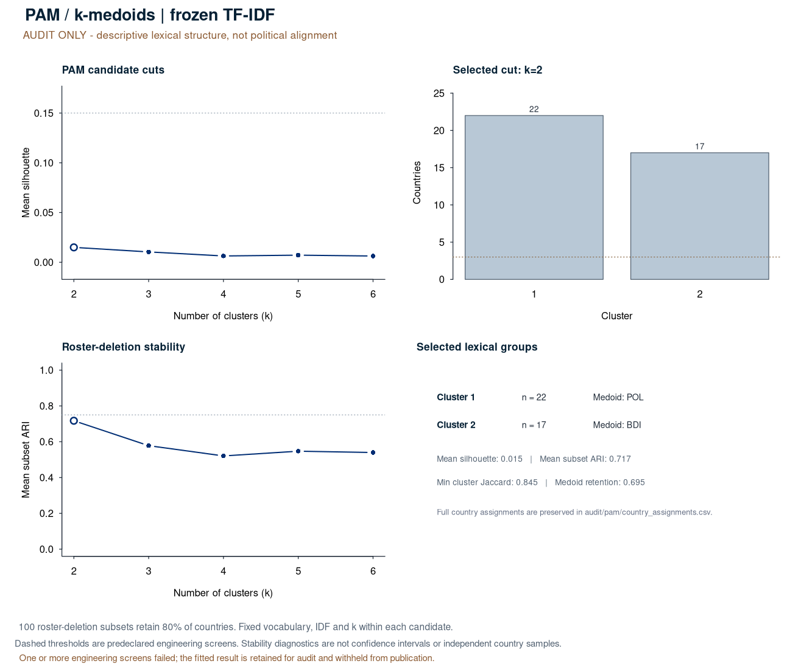

PAM uses the same full frozen TF-IDF Euclidean-chord distance matrix as M07. Medoids are inspectable lexical exemplars; clusters are not geopolitical blocs.
Selected audit cut: k=2; medoids: POL, BDI.
| Check | State | Observed | Criterion |
|---|---|---|---|
| complete_nonzero_coverage | pass | 0 | No excluded country or zero contributing statement |
| distinct_country_texts | pass | 0 | No cross-country exact text/vector duplicates |
| observed_source_scope | fail | 0/78 | Reference and current sources are observed_input, not replay/engineering |
| known_language_genre | fail | unspecified | One declared English genre |
| source_quality | fail | 62 | No source flags or collection errors |
| vocabulary_coverage | pass | 0.184588844163312 | Maximum statement OOV <= 0.35 |
| statement_support | pass | 338 | At least 30 eligible tokens per statement |
| cluster_size | pass | 17 | Min size >= 3 ; max share <= 0.85 |
| silhouette | fail | 0.0149795889648287 | Mean silhouette >= 0.15 |
| replicate_delivery | pass | 1 | Successful finite-ARI fraction >= 1 |
| partition_stability | fail | 0.717329665168892 | Mean subset ARI >= 0.75 |
| clusterwise_stability | pass | 0.844741802905519 | Every cluster mean subset Jaccard >= 0.75 |
| clusterwise_evaluability | pass | 1 | Every cluster evaluable fraction >= 0.8 |
| medoid_stability | pass | 0.695 | Full-sample medoid retention fraction >= 0.6 |
